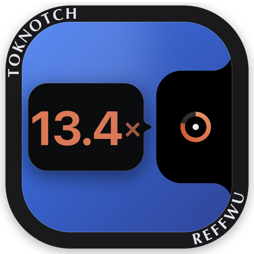
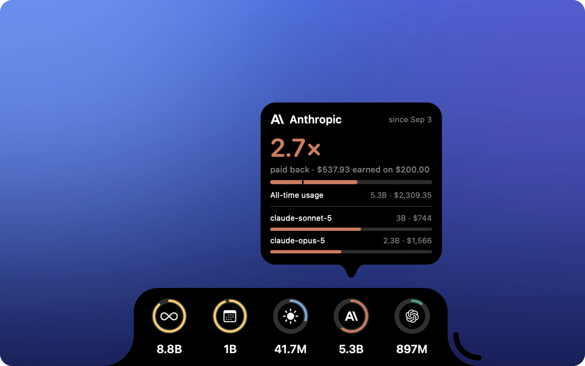

TokNotch
How many times over has each AI plan paid for itself?
Claude Code, Codex and the rest, priced at the published API rates and shown right at the edge of your screen.
Free · macOS 14 or later · Signed and notarized by Apple

Payback at a glance
Pick your plan once. TokNotch counts by your real billing period and shows how many times over it has paid for itself.
Today · This month · All time
Three rings that measure you against yourself: your best recent day, the same days last month, the next milestone.
Nothing leaves your Mac
No account, no API keys, no Node. It reads the session logs your tools already keep, right on this Mac.
Requires macOS 14 or later.